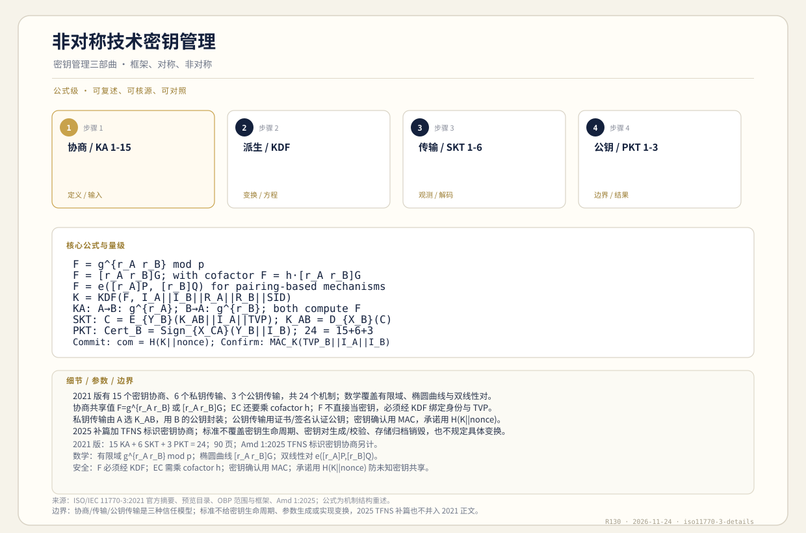
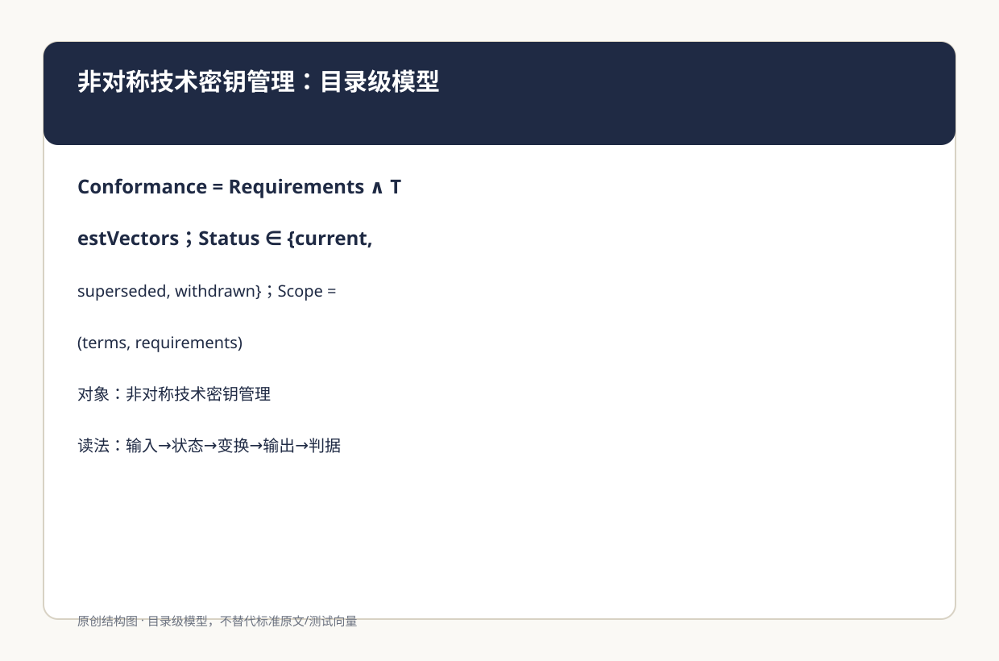

原理与机制
标准：非对称技术密钥管理（Key management — Part 3: Mechanisms using asymmetric techniques）。ISO/IEC 11770-3:2021 把非对称密钥管理分成三类：15 个密钥协商（KA）、6 个私钥传输（SKT）、3 个公钥传输（PKT），共 24 个机制。密钥协商让双方交换数据后共同计算共享值 F，任何一方不能预先决定结果；私钥传输由 A 选定 K_AB，用 B 的公钥封装后传给 B；公钥传输只认证公钥，不要求保密。数学覆盖有限域、椭圆曲线与双线性对。有限域用 F=g^{r_A r_B} mod p；椭圆曲线用 F=[r_A r_B]G，若曲线有 cofactor h 还要算 hF；配对机制用 e([r_A]P,[r_B]Q)。F 不是会话密钥，必须经 KDF 绑定双方身份、随机数、TVP 与 SID 才能得到 K。标准还讨论 key confirmation（用 MAC 证明持有同一 K）与 key commitment（用 H(K||nonce) 防止未知密钥共享）。2025 年补篇加入 TFNS 标识密钥协商，但 2021 正文的 24 个机制不变。公式化记法：K=KDF(F, context)，context=(I_A,I_B,R_A,R_B,SID,purpose)。上下文缺一项，协议就可能跨会话复用或遭未知密钥共享。

为什么重要
三种机制不是同义词。密钥协商的安全性依赖双方私钥与交换消息，任何一方不能预定 K；私钥传输的安全性依赖 B 的公钥与解密能力，A 能选 K 但 B 必须信任封装；公钥传输只解决“这把公钥属于谁”，不解决机密性。KDF 不是可选装饰：原始 F 可能有偏差或不是均匀随机，直接当密钥会留下分布问题；把身份和 TVP 绑进 KDF，才能阻止未知密钥共享与跨会话重放。EC 的 cofactor 乘法用于把点落到正确子群，漏掉会让小子群攻击有机可乘。公式级价值在于说清“哪一类机制、哪一个群运算、哪一层绑定”，而不是把 24 个机制压成“非对称密钥交换”。
应用与实例
选型：双方都要参与计算且不能预定 K，选 KA；A 要控制密钥值，选 SKT；只需认证公钥归属，选 PKT。再选群：有限域、椭圆曲线或配对；配对机制还要检查 PKG/可信中心与密钥托管。实现顺序：校验域参数与公钥；生成私钥并计算公钥；交换/封装；计算 F；EC 乘 cofactor；KDF 绑定 I_A/I_B/TVP/SID/purpose；做 key confirmation；需要时做 key commitment。工程检查：RNG 是否合格；私钥是否在受保护环境；公钥证书链是否验证；KDF 是否用标准函数；是否把 F 直接当密钥；是否漏 cofactor；是否只做单向确认；是否记录 SID 与用途。

边界与攻击面
标准不覆盖密钥生命周期、密钥对生成/校验、存储/归档/销毁，也不规定具体变换。它不保证实现安全；侧信道、错误注入、RNG 失败都在标准之外。未认证的 DH 会遭中间人；EC 漏 cofactor 会遭小群攻击；KDF 不绑身份/TVP 会遭未知密钥共享；只做单向确认或不做承诺，可能让一方接受未知密钥。配对机制还要面对 PKG 托管与配对参数选择。2025 TFNS 补篇是新增机制，不是 2021 正文的修订；引用时不要把 24 个变成 25 个而不说明版本。
历史与背景
Part 3 于 1999 年首版，2008 年第二版，2015 年第三版；2017 年 Amd 1 加入 blinded Diffie-Hellman，2021 年第四版把它纳入正文并给出 90 页的 24 个机制；2025 年 4 月 Amd 1 加 TFNS 标识密钥协商。
技术参数与复算边界
该条目的形式模型是 (S=\min_i S_i,\quad S_i\in{\text{密钥强度},\text{分组安全},\text{实现安全}})。输入：输入：非对称技术密钥管理的公开参数、密钥/随机数与消息；变量说明：S 为综合安全强度；各分量取最小值，不能只看密钥位数。 预期输出：按 非对称技术密钥管理 的规范执行后得到可验证的输出或可比较的优势界。 复算必须给出输入、步骤、输出和单位；示例只演示流程，不替代标准测试向量。
复杂度由密钥长度、分组/状态规模、轮数、随机数质量和敌手模型共同决定；参数越界、版本差异与实现侧信道都可能使公式结论失效。已登记限制：该条目只给出形式模型与可复算步骤，不声称已完成生产实现、侧信道认证或第三方安全评估。
逐步示例与核验
形式模型与复算步骤
[S=\min_i S_i,\quad S_i\in{\text{密钥强度},\text{分组安全},\text{实现安全}}]
非对称技术密钥管理的公开参数、密钥/随机数与消息；变量说明：S 为综合安全强度；各分量取最小值，不能只看密钥位数。1.读取标准规定的密钥/分组/模式参数。2.按标准表换算等效强度。3.取最弱分量作为系统强度。边界：公式只覆盖已登记的参数与假设；参数取值、标准版本和实现细节仍以来源为准。
参考出处
- Wikipedia search entry for 非对称技术密钥管理. https://zh.wikipedia.org/w/index.php?search=%E9%9D%9E%E5%AF%B9%E7%A7%B0%E6%8A%80%E6%9C%AF%E5%AF%86%E9%92%A5%E7%AE%A1%E7%90%86
- Handbook of Applied Cryptography (Menezes, van Oorschot, Vanstone). https://www.cacr.math.uwaterloo.ca/hac/